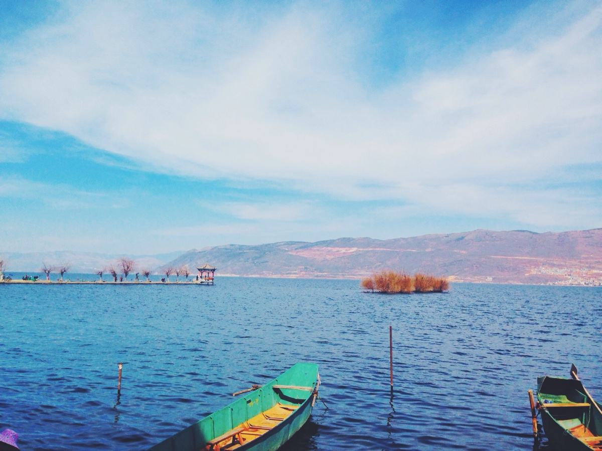

视频大理
苍山洱海
洱海，一个风光明媚的高原湖泊，呈狭长形，宛如一轮新月，静静地依卧在苍山和大理坝子之间，形状如同一个耳朵而取名为“洱海”。
苍山，是云岭山脉南端的主峰，由十九座巍峨雄壮山峰由北而南组成，每两峰之间都有一条溪水奔泻而下，流入洱海，这就是著名的十八溪。
航拍大理古城
大理古城位于云南省西部，又名叶榆城、紫城。古城其历史可追溯至唐天宝年间，南诏王阁逻凤筑的羊苴咩城，为其新都。古城始建于明洪武十五年（1382年），占地面积3平方公里。
大理古城在唐、宋500多年的历史间是云南的政治、经济、文化的中心，在古城内分布了14处市级以上的重点文物保护单位，承载着大理历史文化、宗教文化、民族文化，是大理旅游核心区。
大理古韵
大理是中国西南边疆的文化发祥地之一。早在三千多年前，洱海周围就居住着白族先民。西汉元封年间，始建叶榆县。
唐宋时期先后建立的“南诏国”、“大理国”等地方政权延续了五百多年，一度成为云南的政治、经济、文化中心。自古以来，大理就是滇西之通衢，博南古道、南方陆上丝绸之路必经之地，是云南政治、经济、文化中心，是沟通云南丽江、迪庆、德宏、保山、楚雄、临沧、思茅等8个地州的昆畹公路、滇藏公路的交汇点和物资集散地，又是我国同东南亚各国文化交流、通商贸易的重要门户。
大理——延时拍摄
用另一种方式去记录美丽的大理。
记录一个我们熟悉的，而又不曾发觉的美丽的大理。
多元大理
“婀娜” 的少数民族
这是内容这是内容这是内容这是内容这是内容这是内容这是内容这是内容这是内容这是内容这是内容这是内容这是内容这是内容这是内容这是内容这是内容这是内容这是内容这是内容这是内容这是内容
沙茶马古道上的幸存古集市
沙溪位于大理州剑川县，被联合国誉为“茶马古道上唯一幸存的集市”。如果说束河是10年前的丽江古城的话，这里就是20年前的丽江，同样的小巷流水四方街，这里却更加古朴醇厚。

